純喫茶について
純喫茶とはアルコールを提供していない、純粋にコーヒーを楽しむための喫茶店です。
酒類と女給（ホステス）によるサービスが許可されたお店を「特殊喫茶」、接客の伴わないお店を「純喫茶」と区別するようになりました。
日本コーヒー協会によれば、最も喫茶店が多かったのは1986年の約15万店で、その年をピークに年々店舗数は減少・・・
統計上最新のデータである2016年には、半分以下のおよそ6万7000店にまで減少しています。
減少した理由について考えられることは、マスターの高齢化・後継者がいないこと・コーヒーが安価で安易に飲めるようになったこと・車の普及により
休憩する場所が必要なくなったこと等が挙げられます。
古き良き純喫茶文化を残していくためには、まず純喫茶について知り、実際に足を運んでみることが大切だと考えています。
純喫茶の魅力
純喫茶に行ってみようと思っていただくために、純喫茶の魅力についてご紹介させていただきます。
魅力1 こだわりのコーヒーが楽しめる
現代では、コンビニエンスストアやスターバックスコーヒー等のチェーン店で、安易に安価で飲むことができます。
しかし、それらとは違い、純喫茶では一杯ずつマスター自らがサイフォンでコーヒーを煎れてくれるため、
カフェや自宅では味わえない、一味違うコーヒーを楽しむことができます。
魅力2 ゆったりとした落ち着く空間
まるでタイムスリップしたかのような昭和レトロな空間、静かな音楽、漂うコーヒーの香り・・・
リラックスできるお店が多いのが純喫茶の魅力の一つです。
心を落ち着かせたいとき、ゆったりとした時間を味わいたい時に、最適な場所だと思います。
魅力3 マスターとの距離感
マスターが気さくに話しかけてくださることが多いです。
純喫茶の歴史やこだわりであったり教えていただり、雑談を交わす中でほっと温かい気持ちになります。
マスターに会いに行くために通う常連さんも多い印象があります。
魅力4 同じお店がないこと
店内の空間やインテリアはマスターのこだわりが反映されています。
そのため、どの純喫茶も唯一無二の空間が広がっているので、毎回楽しむことができます。
実際に純喫茶に足を運んでいただいて、上記で紹介した魅力を体感していただきたいです。
紹介しきれていない魅力も沢山あるので、そちらも是非自身で体感していただいて、他の人に伝えていってほしいです。
北九州市の純喫茶紹介
北九州市は人口が全国で一番減り続けており、お店も少なくなっています。
そこで減り続ける純喫茶文化と同じ境遇である北九州市の古き良き喫茶店をご紹介します。
お気に入りの純喫茶を見つけていただけると嬉しいです。
中にはアルコールを提供しているお店もありますが、純喫茶が減少している実態を知っていただきたいので紹介させていただきます
喫茶リバー
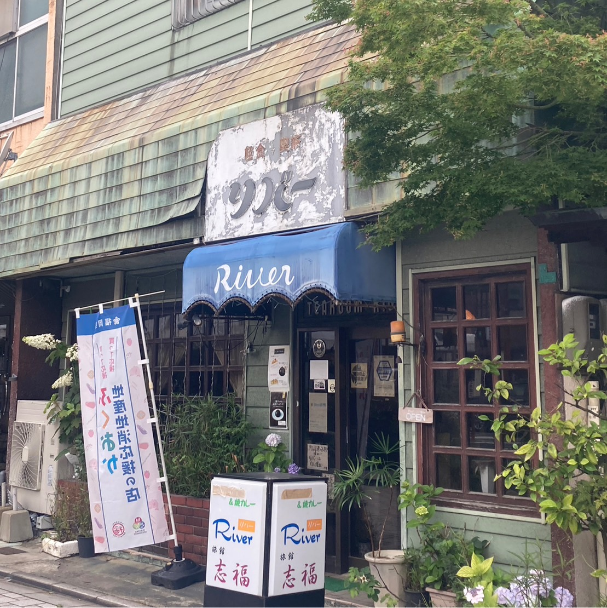 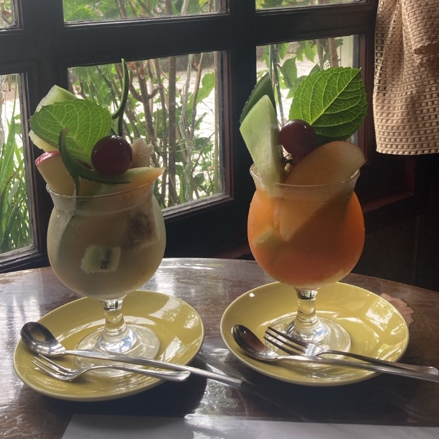
門司港にある昭和感漂う純喫茶。650円のフルーツジュースは、フルーツがたくさん入っていてお得なのでおすすめです。
気さくなマスターがジュースの味をチョイスしてくれます。夕方には、売り切れになるだとか・・・。
住所：〒801-0852 福岡県北九州市門司区港町1-23
最寄り駅:門司港駅
電話番号：093-321-3204
営業時間：月~日 8時30分~17地00分
席：6席ほど
駐車場：なし
備考：喫煙可能 おそらく現金のみ
CAFE DE FAN FAN
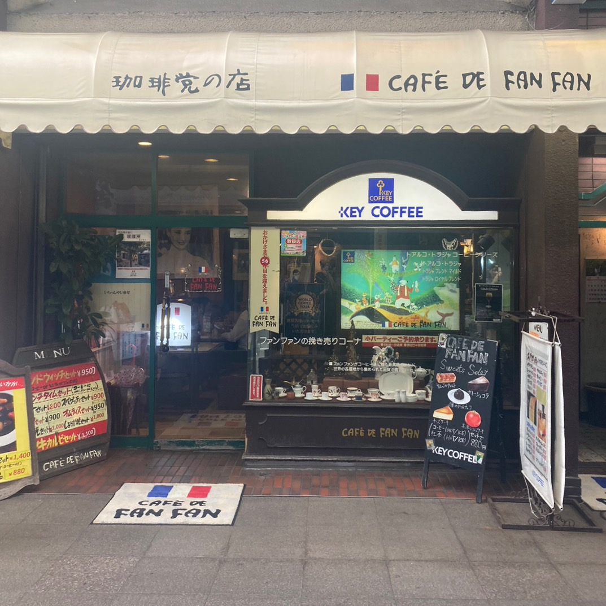 
1968年に創業された京町銀天街の中にある老舖の喫茶店。半世紀以上愛され続けています。
珈琲の種類が多いだけでなく、アンティーク調の店内で照明も落ち着いているので心地が良い空間です。
住所：〒802-0002 福岡県北九州小倉北区京町1-2-8
最寄り駅:小倉駅
電話番号：093-551-4817/p>
営業時間：月~日 8時00分~20地00分（モーニング11時まで。ランチは11時から15時。）
席：10席ほど カウンター席もあり
駐車場：なし
備考：中庭のみ喫煙可能 現金のみ 定休日は1月1日のみ
グリーングラス
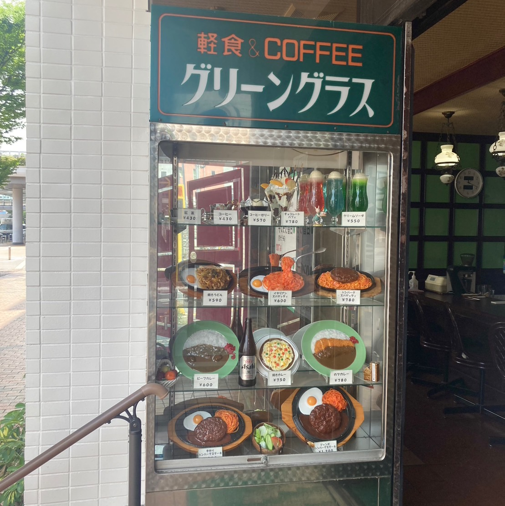 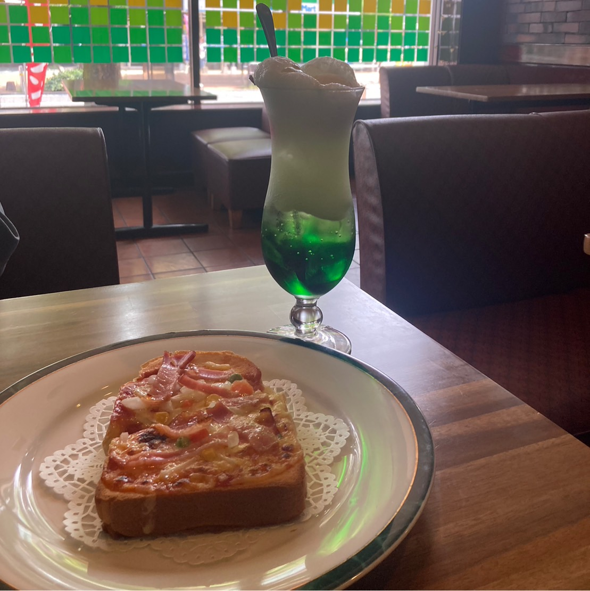
小倉駅北口側から歩いてすぐにある1975年に創業し40年以上続く喫茶店。
ハンバーグスパゲッティ（750円）はボリュームがあって味もおいしくリピーターが多いだとか・・・。
住所：〒802-0001 福岡県北九州市小倉北区浅野1-2-6
最寄り駅:小倉駅
電話番号：093-511-4697
営業時間：月~日 8時00分~20地00分
席：6席ほど カウンター席もあり
駐車場：なし
備考：全席禁煙 現金のみ
琥珀
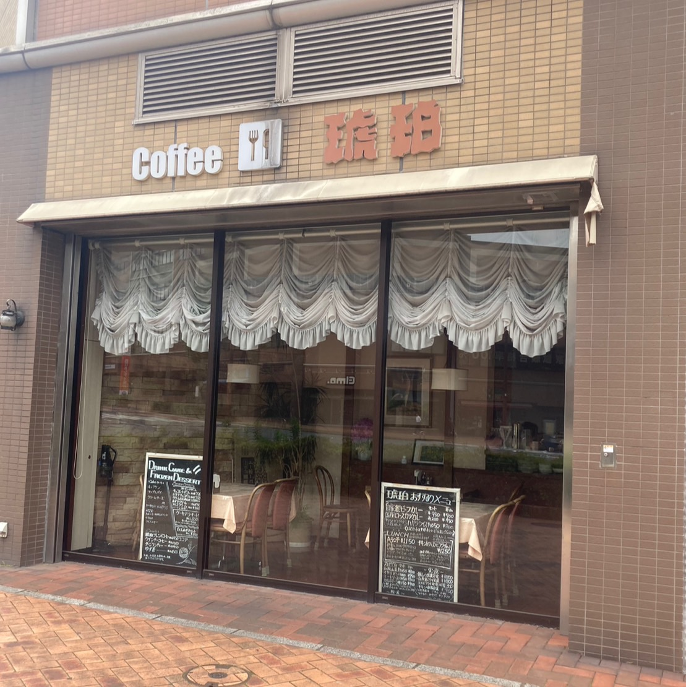 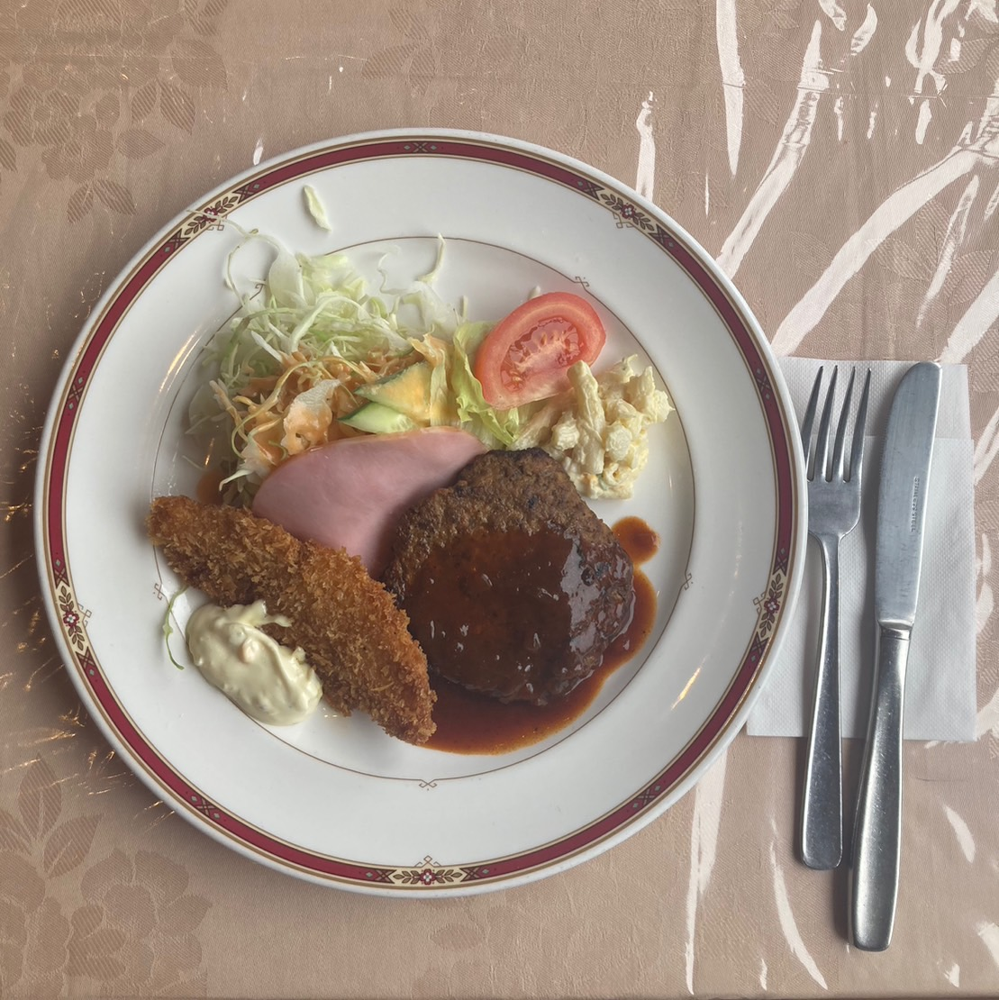
1959年に創業の60年以上に渡り、八幡で愛される喫茶店。店内はシックで昭和レトロな雰囲気です。
メニューも豊富で、1050円のAランチはサラダや飲み物、スープがついてくるのでおすすめです。
住所：〒805-0061 福岡県北九州市八幡東区 西本町4-1-1 サワラガーデンモール一番街
最寄り駅:八幡駅
電話番号：093-671-6293
営業時間：月~日 11時00分~17地00分
席：10席ほど
駐車場：なし
備考： 禁煙 現金のみ 駐車場あり
喫茶 紫留来
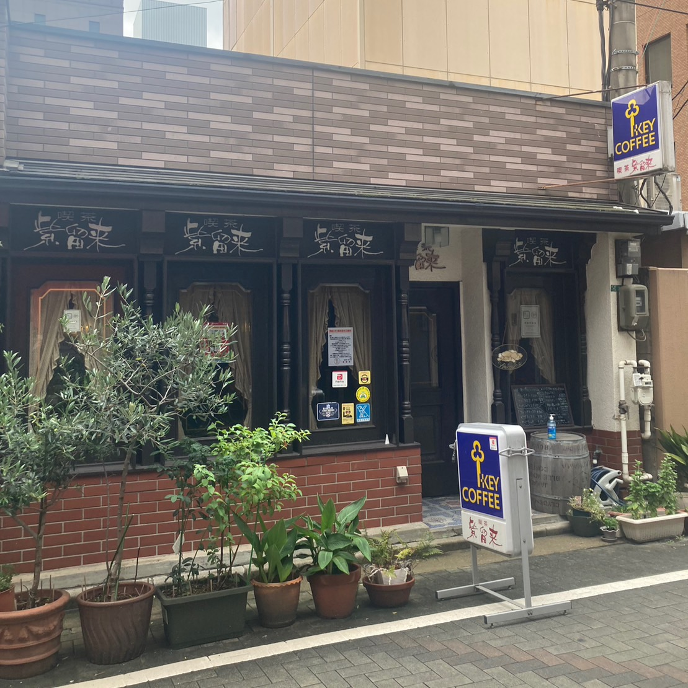 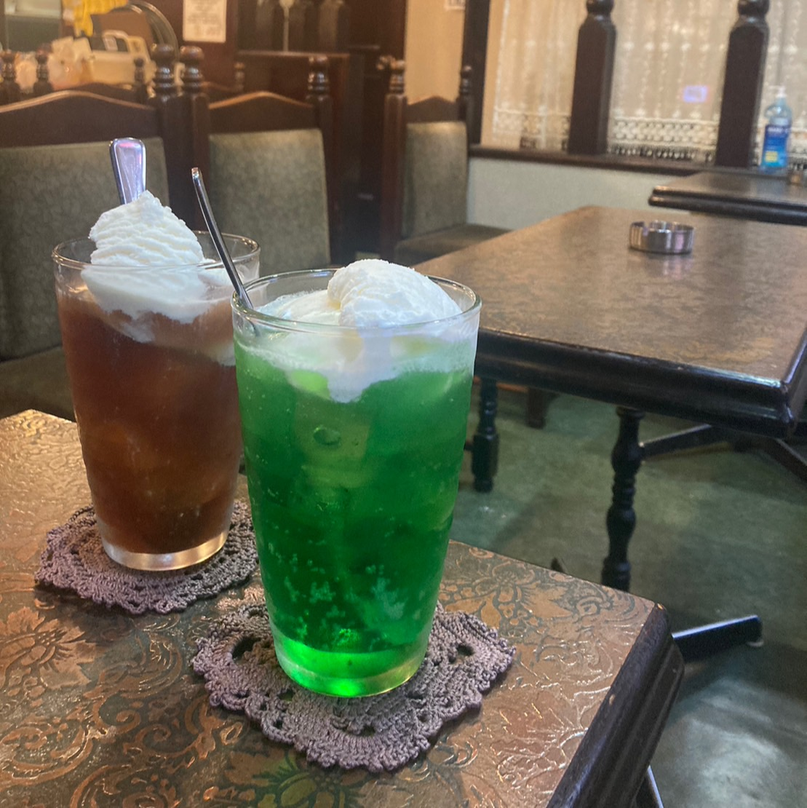
看板犬のモカちゃんが出迎えてくれ、自家製焙煎の珈琲を楽しめる喫茶店です。/p>
お値段もリーズナブルで、店内もノスタルジーな雰囲気なのですごく居心地がいいです。
住所：〒802-0003 福岡県北九州市小倉北区米町1-2-5
最寄り駅:小倉駅
電話番号：093-531-4818
営業時間：月~金 10時00分~18地00分 土曜日12時00分~17地00分 日曜日は定休日
席：4席ほど カウンター席もあり
駐車場：なし
備考：喫煙可能 現金 電子マネー可能
ドン珈琲館
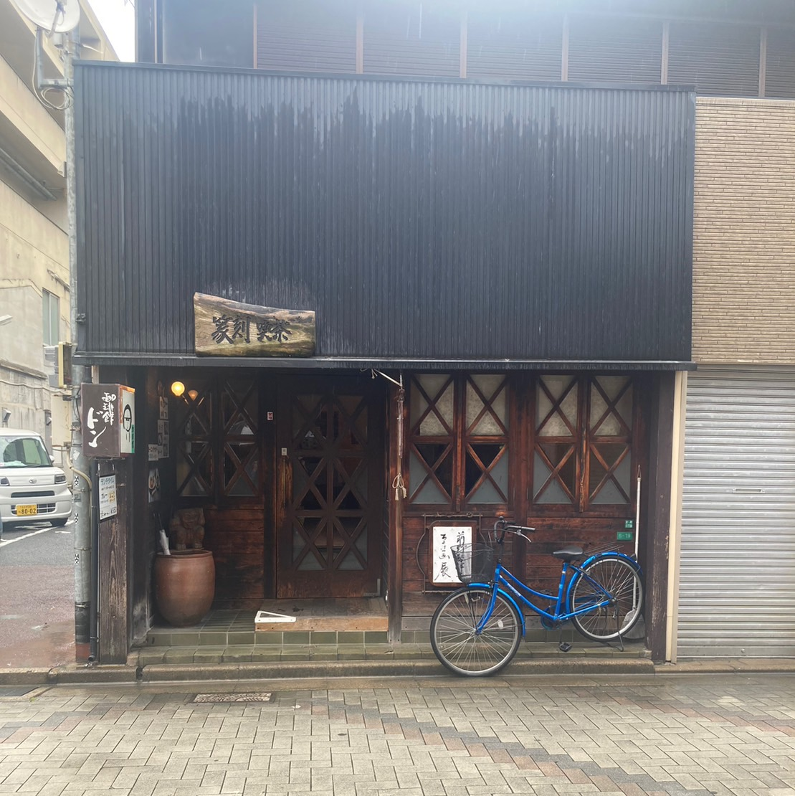 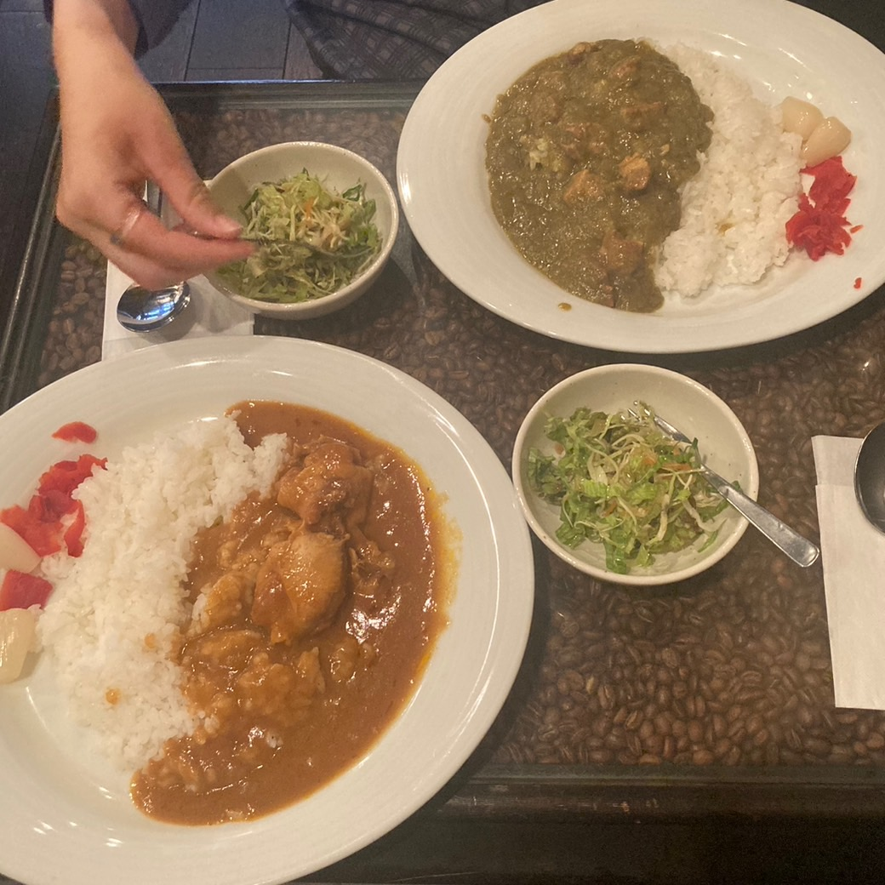
気さくなマスターとインコの弥太郎が出迎えてくれる老舗喫茶。陶器や絵画が展示されている落ち着く空間です。
ランチのカレーは、サラダと珈琲がついて550円でお得。珈琲が苦手な人でも飲みやすいのでおすすめです。
住所：〒802-0002 福岡県北九州市小倉北区京町3-6-19 ドン珈琲館
最寄り駅:小倉駅
電話番号：093-522-6593
営業時間：月~土 8時00分~18地00分 日曜日は定休日
席：11席ほど カウンター席あり
駐車場：なし
備考：禁煙 現金のみ